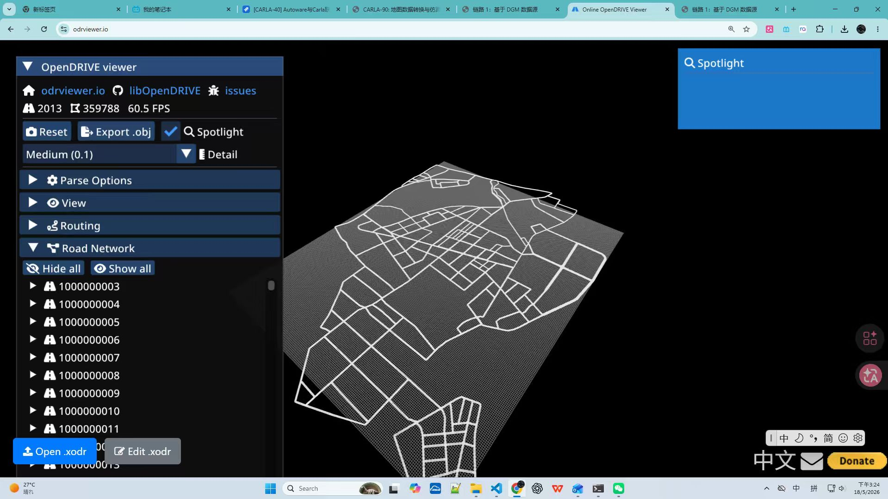
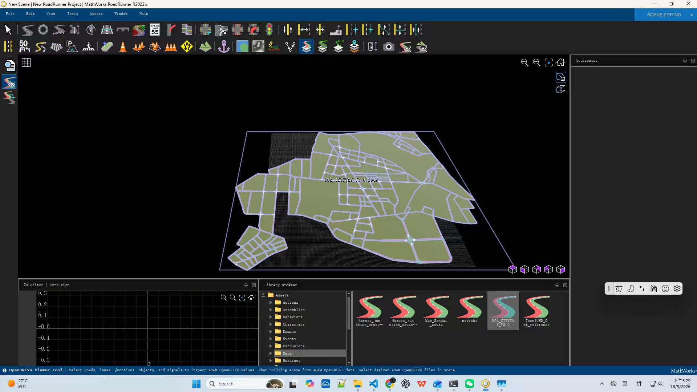
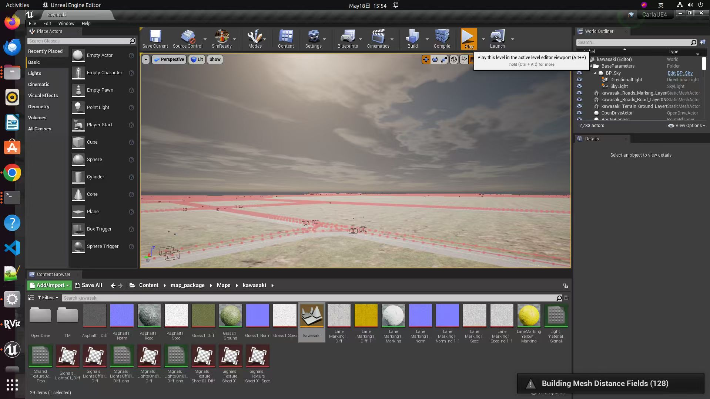

技术验证 (QA)
Q: 针对 NOA_CITYWAY_V3.0.xodr 文件的分析结论是什么？
A: 该文件已具备构建路网的基础要素（拓扑连接、几何轨迹、车道结构、初步交通标志），但需注意以下潜在限制：
- 拓扑完整性： 虽然 `link` 关系构建良好，但需进一步核实 Junction 内部是否为所有连接提供了精确的 `laneLink`，以防自动驾驶在路口丢失路径。
- 信号灯语义： 已识别出 `type="294"` (停止线) 和 `type="293"` (人行横道) 的信号信息，但缺乏控制器定义，若需动态交通灯模拟，需补充 Controller 关联。
- 物理属性： Surface 定义部分目前为空，缺乏路面摩擦系数等动力学模拟关键参数，如需进行车辆极限动力学测试需手动补充。
- 后续验证建议： 建议通过 odr-viewer 检查孤立节点，并利用 Autoware 地图加载器进行 Lanelet2 转换测试，验证语义属性是否被正确保留。
Q: DGM 数据的转换流程中，原始 OpenDrive 数据在不同工具中的表现是怎样的？
A: 原始 DGM 转换的 OpenDrive 数据在 `odrViewer` 与 `RoadRunner` 中表现为高度结构化的矢量网格，其核心特征包括：
- 直观的拓扑网络： 每一个 Road ID 均被显式地解析为一条连贯的道路，并在 viewer 中可见完整的城市路网骨架。
- 几何保真度： RoadNetwork 在视图中呈现出明显的层次感，参考线定义精确，能够还原武汉真实路网的弯道与交汇形态。
- 视图结构一致性： 数据结构严格遵循 OpenDRIVE 规范，通过 viewer 的 Road Network 面板可以快速遍历全网，验证了转换链路在“几何拓扑提取”这一步骤的正确性。

Q: 如何将 OpenDrive 数据转换为 CARLA 可用的 FBX 场景？
A: 通过 RoadRunner 的 CreateScene 工作流，可以高效完成 OpenDrive 到仿真场景的转换：
- 导入： 将 OpenDrive 文件 (如 NOA_CITYWAY_V3.0.xodr) 直接拖入 RoadRunner 场景编辑界面。
- 创建与实例化： 使用
CreateScene 命令将 OpenDrive 数据实例化，系统会自动生成道路网格、路面材质及相关的逻辑约束。
- 调整与检查： 在 RoadRunner 界面中可以清晰地看到 NOA_CITYWAY_V3.0.xodr 的全貌，确认网络连接无断裂，路口逻辑正确。
- 导出： 使用 Carla 插件导出 FBX 文件，该文件包含了精细的 3D 模型资产，配合导出的 xodr 文件，即可完美导入 Carla 引擎。

Q4: 如何在 Carla UE Editor 环境中执行 make import 命令，将 FBX 等资源导入 Carla Editor？
A: 在 Unreal Engine Editor 环境下，通过 Makefile 或手动导入流程将处理好的 FBX 及资产部署到 Carla 中。如图所示：
- Content Browser 结构： 如图中 Content Browser 所示，地图资源已被组织在
Content > map_package > Maps > kawasaki 路径下。
- 资产集成： 导入后，模型被识别为
StaticMeshActor（如 kawasaki_Roads_Road_Layer0 等），并正确挂载至 World Outliner。
- 编译与构建： 在 Editor 界面中，通过 `Build` 选项编译 Mesh Distance Fields（如右下角所示），这对于车辆在路面的碰撞检测和传感器模拟（特别是 LiDAR）至关重要。
- 验证部署： 导入后，可在 Viewport 中直观检查 kawasaki 地图是否完全加载，所有材质（如 LaneMarking_Yellow1）是否按预期渲染，确保仿真环境与真实物理形态的一致性。

Q5: DGM 的原始数据格式是什么样的，通过什么样的工具从数据库导出为 OpenDrive 数据格式？
A: DGM (Digital Map) 原始数据通常源自高精度测绘数据库，其格式与导出工具链如下：
- 原始格式： DGM 原始数据通常以私有数据库格式（如 Oracle Spatial 或 GIS 专用存储）存在，核心包含：
- 几何图层 (Geometry Layer)：存储道路中心线、车道宽度、坡度的原始点集坐标。
- 属性图层 (Attribute Layer)：以字段形式存储限速、车道数量、交通标志等语义标签。
- 转换导出工具：
- ETL 转换工具： 通常使用自主研发的 ETL (Extract, Transform, Load) 管道，通过 SQL 查询从空间数据库中按区域提取数据。
- OpenDrive 生成引擎： 使用专门的 MapConverter 引擎（如基于 C++ 的定制化库），将提取出的 GIS 几何信息和语义属性按照 OpenDrive 的 XML Schema 定义，进行插值计算和拓扑重构，最终生成标准的 `.xodr` 文件。
- 坐标基准： 数据库中通常使用经纬度 (WGS84) 或国家大地坐标系 (如 CGCS2000)，在导出时需要通过坐标转换插件（如 PROJ 库）将其投影到平面直角坐标系下，以符合仿真引擎对局部坐标的精度需求。